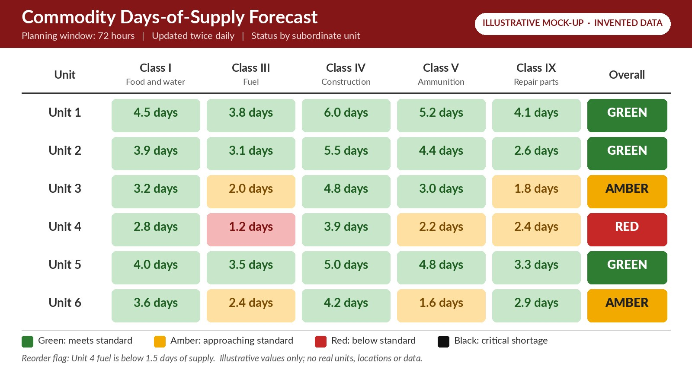

Operations · Army logistics
Army Unit Commodities Forecast
A days-of-supply planning model that anticipated shortages across five supply classes for a battalion.
- Setting
- Battalion logistics, Fort Carson
- Role
- Battalion Logistics Officer
- Scope
- $15M annual commodity budget, about 500 Soldiers
- Format
- Excel planning model, updated twice daily

The problem
When I became Battalion Logistics Officer at Fort Carson in November 2022, the logistics section's daily work was routine administration. The planning side, looking ahead at what the battalion would need, had to be built. Nine months later the battalion was scheduled for a two-week, large-scale combat exercise at an Army combat training center, where demand for supplies is high, units are dispersed, and other units flow in and out of the battalion's support.
The battalion was about 500 Soldiers and could grow toward 800 with attachments. I held a $15 million annual commodity budget. Ordering too little or too late carries an immediate readiness cost, while ordering too much ties up money the unit needs elsewhere. I needed to see shortages before they happened.
The model
I built a planning model in Excel around days of supply, covering food, fuel, construction materials, ammunition, and repair parts. Each subordinate company and attachment sent me a logistics report, and I compiled those reports into the model twice a day. The model compared supplies on hand against consumption rates for the Soldiers and vehicles being supported, showing how many days of supply each unit held in each class and when to order new supplies or issue them down.
Each unit was rated Green, Amber, Red, or Black against Army standards, which gave the battalion a quick visual read on readiness while keeping the assumptions behind every number visible so they could be questioned and refined. The model worked at two scales: short-range planning in windows from 96 hours down to 12 hours, and fiscal-year planning to allocate supplies and budget. During the exercise the timelines compressed, because the event lasted only two weeks.
The hardest part was not the spreadsheet. It was the inputs. A forecast is only as good as the reports behind it, and getting subordinate units to report accurately and on time required constant attention.
A reporting tool alongside it
I also built a tool that let me enter subordinate units' reports once and automatically transposed them into the format required by brigade. The battalion and brigade report formats did not nest, so converting by hand took time. I built versions for equipment status, vehicle recovery, and battle damage reports.
The outcome
No mission was delayed by a supply shortfall, even when that meant waking up at midnight to run a supply mission ourselves, with my operations sergeant major, under night-vision goggles. When I left in January 2024 as the battalion prepared to deploy again, I handed the model off, and as far as I know it was still in use.
What I took away
A forecast earns trust when people can see how it works, and it is only as reliable as the data feeding it. Much of the work was turning late, inconsistent reports into a tool leaders could act on. I chose Excel because it was what I knew best. Today I would use AI tools to help build it faster, but the principle would not change: keep the tool simple, make the assumptions visible, and put the effort into the quality of the inputs. Each of those carries directly into consulting work.